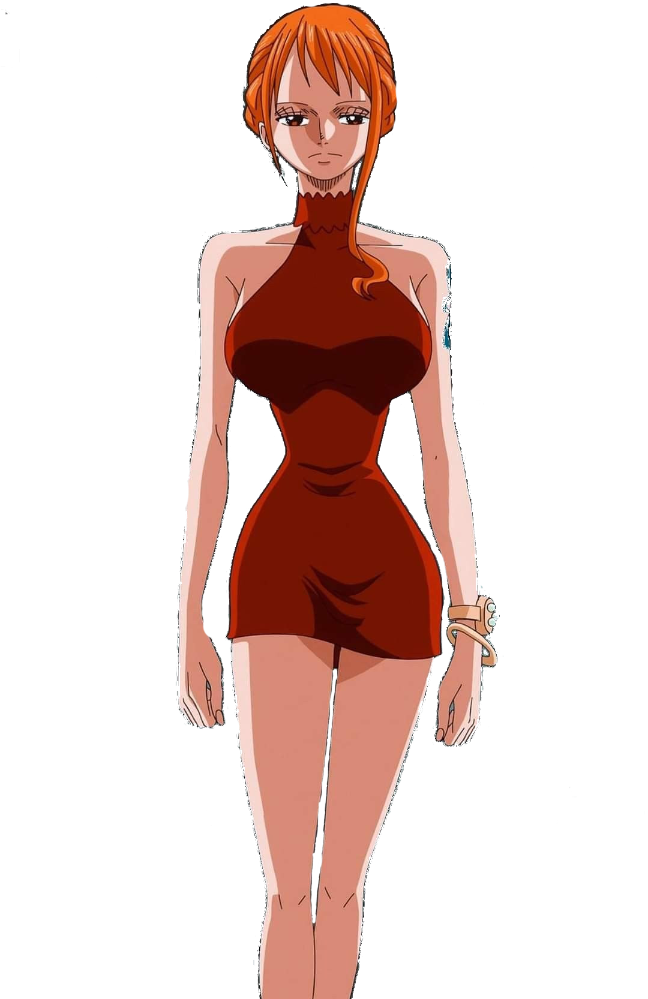

Nami
Características Principais:
Nome original: ナミ
Nome traduzido: Nami
Nacionalidade: Sueca
Terra-natal: Vila Cocoyasi - East Blue
Idade: 20
Altura: 1,70
Peso: Desconhecido
Habilidade: Navegadora; Pirata; Ladra
Armas usadas: Clima-Tact
Tripulação: Piratas do chapéu de palha
Biografia
Nami é uma órfã de guerra de uma aldeia desconhecida, encontrada por Bell-mère, uma mulher da Marinha, num campo de batalha hostil quando ainda era um bebê. A marinheira adotou ela e Nojiko, outro órfã. As três se tornaram tão próximos quanto uma família real.